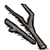

Main Page
Dragonpie
Origin
The history of the pie has its roots in ancient Egypt and Greece. The ancient Greeks ate pie (artocreas), though it was of the savory type with meat in an open pastry shell. The Romans may have been the first to create a pie that included a top and bottom crust.
Restores:
Hunger 75, Health 40, Sanity 5
Pros:
- HP restoration is more than most hunger-point focused dishes.
- 15 day spoil-time makes it decent for long trips. You can stack a few of these to avoid needing to worry about food for a while.
- Chew time is relatively short, making it useful for Wolfgang to use in fights to maintain his mighty form.
- The best non-meat dish - can be carried safely around Bunnymen.
Cons:
- Requires a focused effort to produce en-masse. A Birdcage and a good supply of manure is needed.
- Wigfrid cannot eat this dish, because she can only eat meats.
Using it best:
If you can get production established, this can be your main food. This is made much easier by settling near Beefalo. Other efficient manure-gathering means are gathering large quantities of petals / lightbulbs, transforming a Pigman into a Werepig, dropping the items on the floor and having him eat them; each one producing a manure.
Ingredients
- 1 Dragon Fruit
- 3 Twigs 
Steps
- Add 1 dragon fruit in the crockpot
- Add 3 twigs
- Enjoy!
Go Back Up